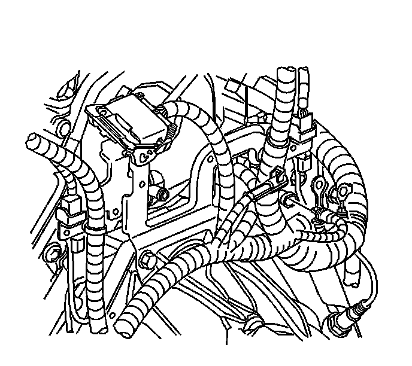
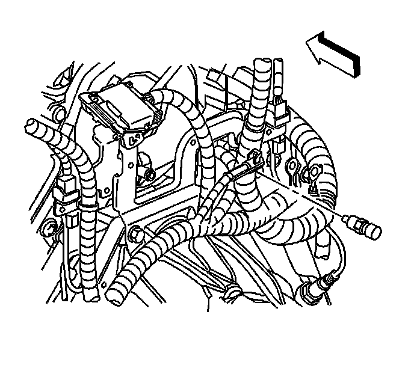

Coolant Temperature Sensor/Switch (For Computer): Service and Repair
Engine Coolant Temperature Sensor Replacement
Removal Procedure
Notice: Use care when handling the coolant sensor. Damage to the coolant sensor will affect the operation of the fuel control system.

1. Turn OFF the ignition
2. Remove the fuel injector sight shield. Refer to Fuel Injector Sight Shield Replacement (Service and Repair) .
3. Drain the coolant to below the level of the engine coolant temperature (ECT) sensor. Refer to Cooling System Draining and Filling (GE 47716 -Vac N Fill Coolant Refill Tool) (Service and Repair)Cooling System Draining and Filling (Static Fill) (Service and Repair) .
4. Disconnect the ECT sensor harness connector.

5. Remove the ECT sensor.
Installation Procedure
Notice: Use care when handling the coolant sensor. Damage to the coolant sensor will affect the operation of the fuel control system.
Notice: Replacement components must be the correct part number for the application. Components requiring the use of the thread locking compound, lubricants, corrosion inhibitors, or sealants are identified in the service procedure. Some replacement components may come with these coatings already applied. Do not use these coatings on components unless specified. These coatings can affect the final torque, which may affect the operation of the component. Use the correct torque specification when installing components in order to avoid damage.
1. Coat the sensor threads with sealer GM P/N 1050805, or equivalent.
Notice: Refer to Fastener Notice .
2. Install the ECT sensor.
Tighten the ECT sensor to 20 N.m (15 lb ft).
3. Connect the ECT sensor harness connector.
4. Install the fuel injector sight shield. Refer to Fuel Injector Sight Shield Replacement (Service and Repair) .
5. Refill the coolant system. Refer to Cooling System Draining and Filling (GE 47716 -Vac N Fill Coolant Refill Tool) (Service and Repair)Cooling System Draining and Filling (Static Fill) (Service and Repair) .